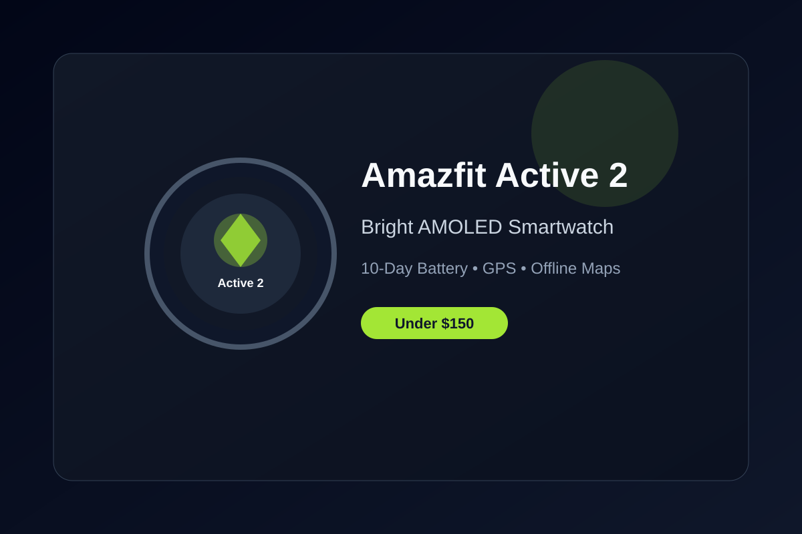

Amazfit Active 2 Review: Bright AMOLED and Long Battery Under $150
The Amazfit Active 2 packs a premium-looking design, accurate health sensors, offline maps, and up to 10 days of battery life into an affordable package.
The Amazfit Active 2 stands out in the crowded under-$150 smartwatch space by looking and feeling more premium than its price suggests. With a stainless steel case, bright 2,000-nit AMOLED display, and comfortable straps, it works well as both a fitness companion and an everyday wearable.
Battery life is a major strength. Amazfit claims up to 10 days of typical use, and real-world results often land in the 8–9 day range even with heart-rate monitoring and occasional GPS workouts. That multi-day stamina is a big advantage over many mainstream smartwatches that need daily charging.
Built-in GPS and free offline maps make it useful for outdoor runs and walks without carrying your phone. Health tracking covers continuous heart rate, SpO₂, sleep stages, stress, and more than 160 workout modes. The Zepp app is straightforward and doesn’t lock core features behind a subscription, which keeps the value high.
The display is responsive and easy to read outdoors thanks to the high brightness. Notifications, music controls, and basic voice assistant features work reliably on both Android and iOS. While it isn’t a full smartphone replacement, it handles the essentials smoothly for the price.
If you want a capable fitness smartwatch that looks good on the wrist, lasts nearly a week and a half between charges, and stays under $150, the Amazfit Active 2 is one of the strongest options available right now.
Key Takeaways
- Price Range: ~$80 – $100 (Amazon)
- Display: Bright 2,000-nit AMOLED with good outdoor visibility
- Battery: Up to 10 days typical use (8–9 days with GPS)
- Features: Built-in GPS, offline maps, 160+ sports modes, no subscription for core tracking